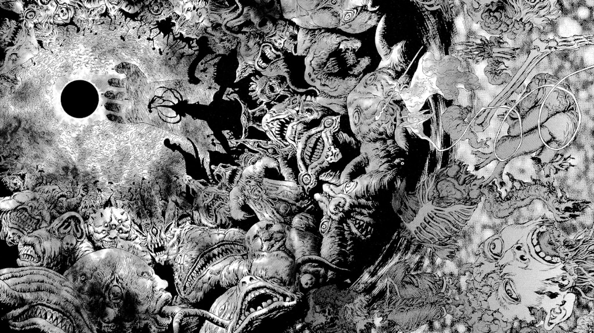
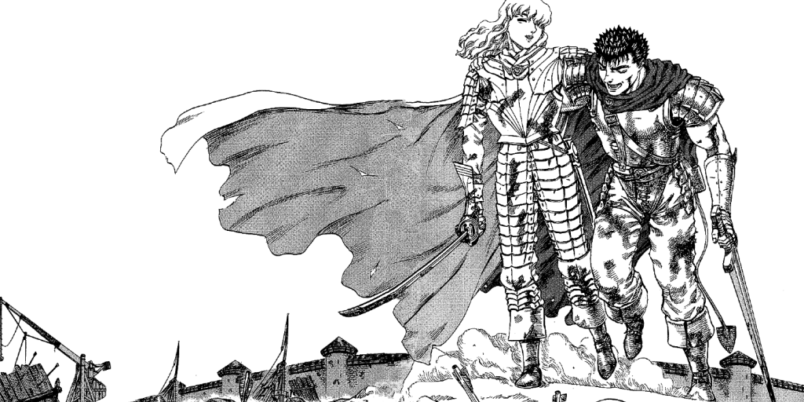
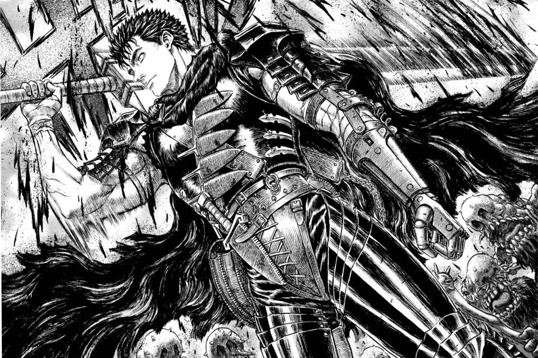
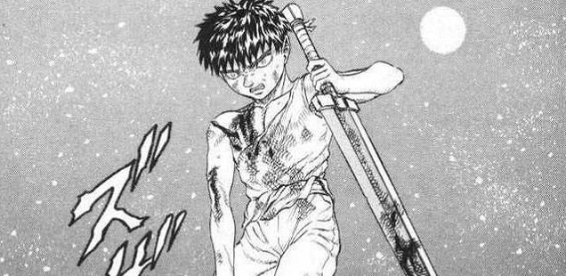
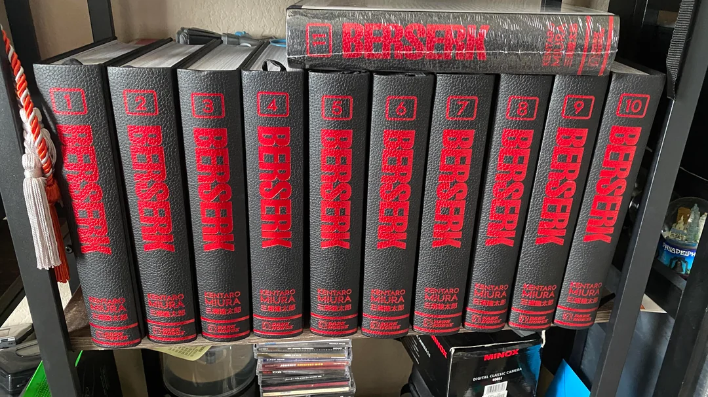

L'Atracció de Berserk
Per què m'agrada
Berserk és una sèrie que destaca per la seva profunditat de trama, desenvolupament de personatges, i l'art excepcional. És una obra que m'ha inspirat i vull compartir aquesta passió amb altres fans.
Profunditat de Trama
Una de les raons principals per les quals m'agrada Berserk és la seva trama complexa i ben construïda. La història de Guts i la seva lluita contra forces sobrenaturals, així com els seus conflictes personals, ofereixen una narrativa rica i captivadora. Els girs inesperats i els moments d'intensitat emocional mantenen l'interès de qualsevol lector, fent de cada volum una experiència única.

Desenvolupament de Personatges
Els personatges de Berserk són profunds i multidimensionals. Guts, el protagonista, no és només un guerrer fort; és un personatge amb un passat tràgic, somnis i temors. La seva evolució al llarg de la sèrie és fascinant, igual que la dels altres personatges com Griffith i Casca. Les seves relacions i conflictes interns són retratats de manera tan realista que és impossible no empatitzar amb ells.
Art Excepcional
L'art de Kentaro Miura és una altra raó clau pel meu amor per Berserk. Cada pàgina està plena de detalls intricats i paisatges espectaculars que donen vida al món medieval i fantàstic de la sèrie. Les escenes de batalla són especialment impressionants, amb una dinàmica i brutalitat que capten perfectament l'essència dels enfrontaments.
Inspiració Personal
Berserk no és només una sèrie d'entreteniment; és una font d'inspiració. Els temes de perseverança, lluita contra l'adversitat i recerca de la llibertat ressonen profundament amb mi. La determinació de Guts a seguir endavant malgrat els obstacles més insuperables és una lliçó de vida que em motiva en els moments difícils (Recuperacions UF's).
Compartir la Passió
Compartir aquesta passió amb altres fans és una experiència enriquidora. La comunitat de Berserk és acollidora i plena de persones que comparteixen l'amor per aquesta obra mestra. A través de discussions, art de fans i esdeveniments, es crea un vincle especial entre els seguidors, fent que l'experiència de seguir Berserk sigui encara més gratificant.
